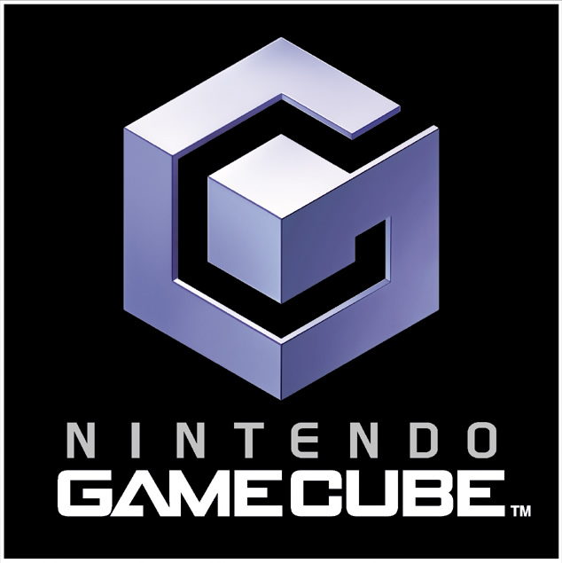

|  |
| Platform Name: |
GameCube |
| Description: |
The GameCube is a home video game console released by Nintendo in Japan on September 14, 2001; in North America on November 18, 2001; in Europe on May 3, 2002; and in Australia on May 17, 2002. The sixth-generation console is the successor to the Nintendo 64 and competed with Sony Computer Entertainment's PlayStation 2 and Microsoft's Xbox.The GameCube is the first Nintendo console to use optical discs as its primary storage medium. The discs are similar to the miniDVD format; as a result of their smaller size and the console's small disc compartment, the system was not designed to play standard DVDs or audio CDs. The console supports online gaming for a small number of its titles via the broadband or modem adapter and connects to the Game Boy Advance via the link cable, allowing players to access exclusive in-game features using the handheld as a second screen and controller. |
| Brand: |
Nintendo |
| Media: |
Nintendo GameCube Game Disc |
| Operating System: |
Dolphin OS |
| Best Selling Game: |
Super Smash Bros. Melee |
|